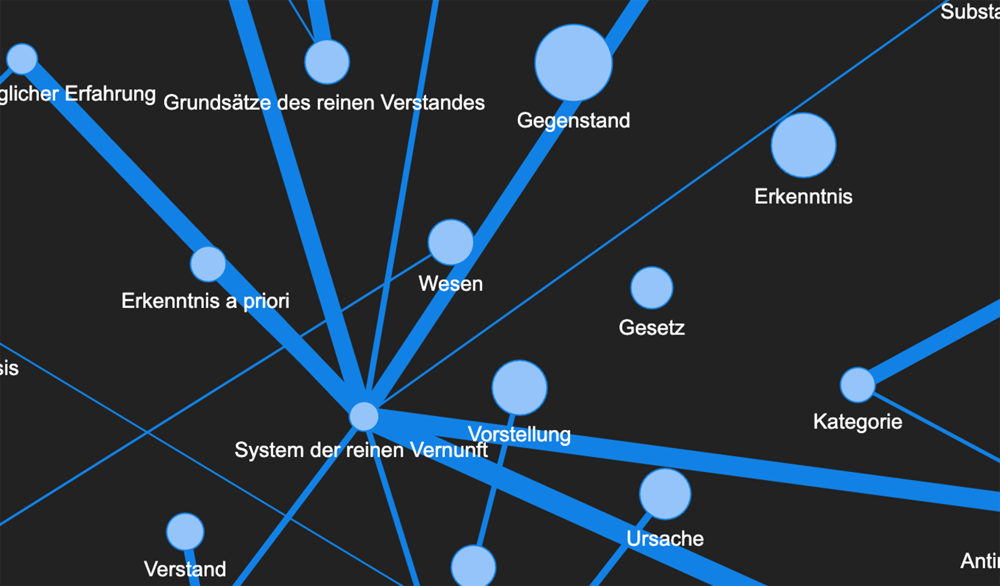
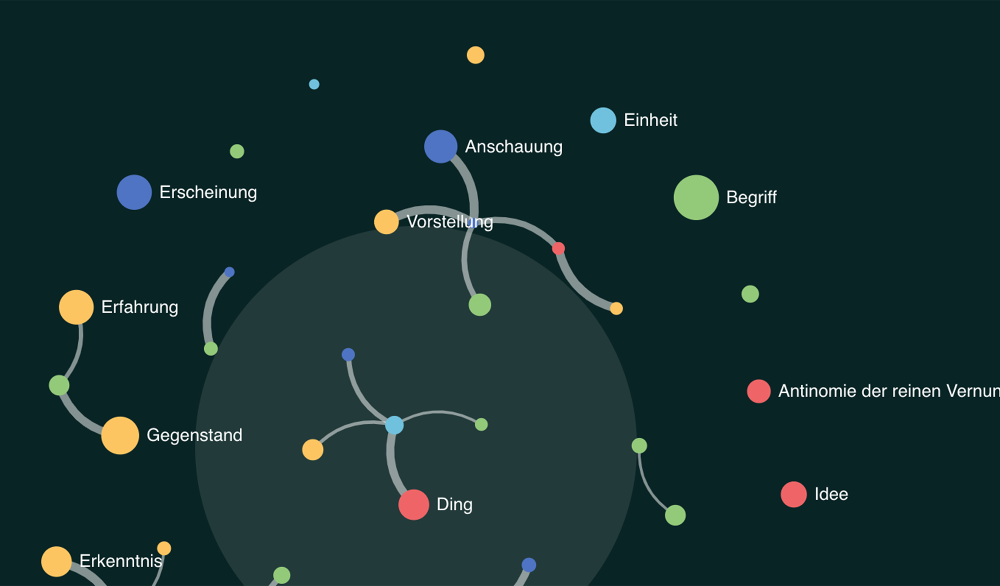
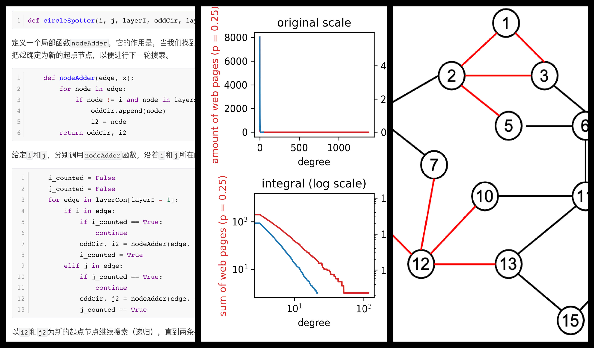
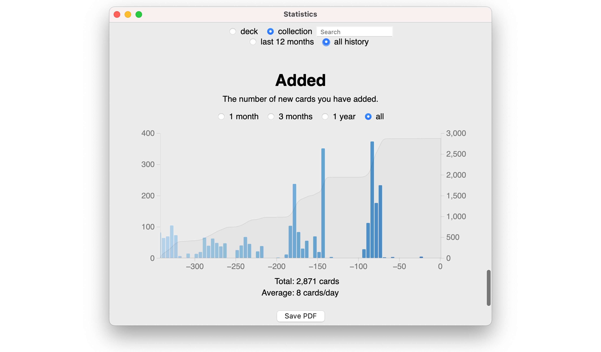
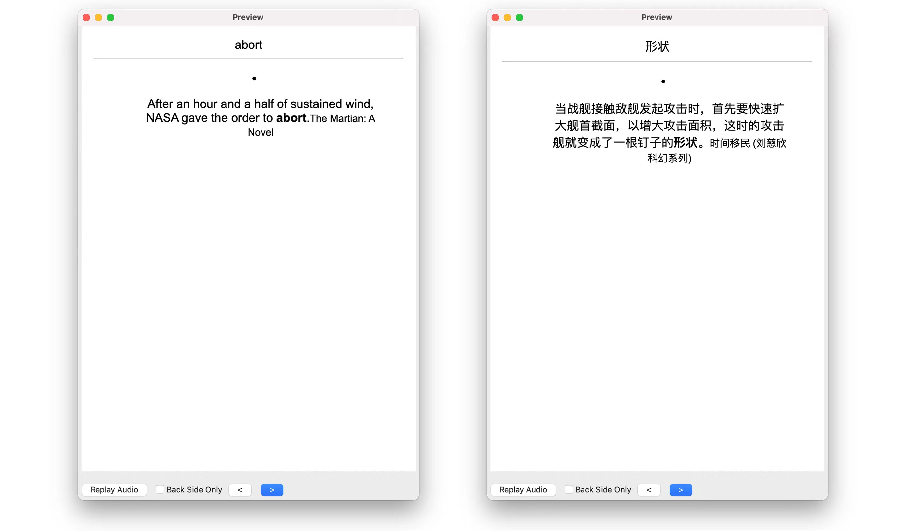

From Philosophy to Computer Science
Having dived in the study of German philosophy for 3 years, I am now steering another course and seeking a career in tech.
Philosophy made me who I am, while coding as a developer is now my way of Erstellung (creation).
I am especially intrested in Technology-Enhanced Learning (TEL) initiative.
I have dabbled in this field and made a few attempts,
including works related to philosophy education and language learning.
I am planning on a bigger project of—a more handy productivity suite for—language learning.
If you are interested, feel free to contact me via email (see below).
Check below and see my works since my transition to CS a half year ago.
You might find them not created equal
Recent Works

- Collected 10k+ lines of data and extracted important terms with traditional NLP methods
- Trained a BERT model on texts of 860k+ words
- Increased the prediction accuracy of the pretrained model by more than 70%

- Generated a network of terms according to the semantic vectors in my BERT model
- Built a website with animated interactions to help my students utilize the terminology network
- Initialized and managed user service and deployed it to Google Compute Engine

- Invited by Professor Xiaoming Li from CS department at PKU
to share my 10 assignments of Computational Practices for Social Science Research
- Compiled a 90-page pamphlet of 1k+ lines of codes and illustrations at length
- Will be used for pedagogical reform of social sciences and humanities at PKU and in China

- Shared my productivity suite and tips for language learning
- Drawed resources from linguistics, as well as made use of apps and coding skills
- The douban diary version received 5k+ visits.

- Coded 1k+ lines in Python and developed an for a learning app Anki
- This add-on helps generate vocabulary cards in multiple languages from reading notes on a Kindle
Learn more and get in touch
{kind=link}
{kind=link}
{kind=link}
{kind=link}
{kind=link}